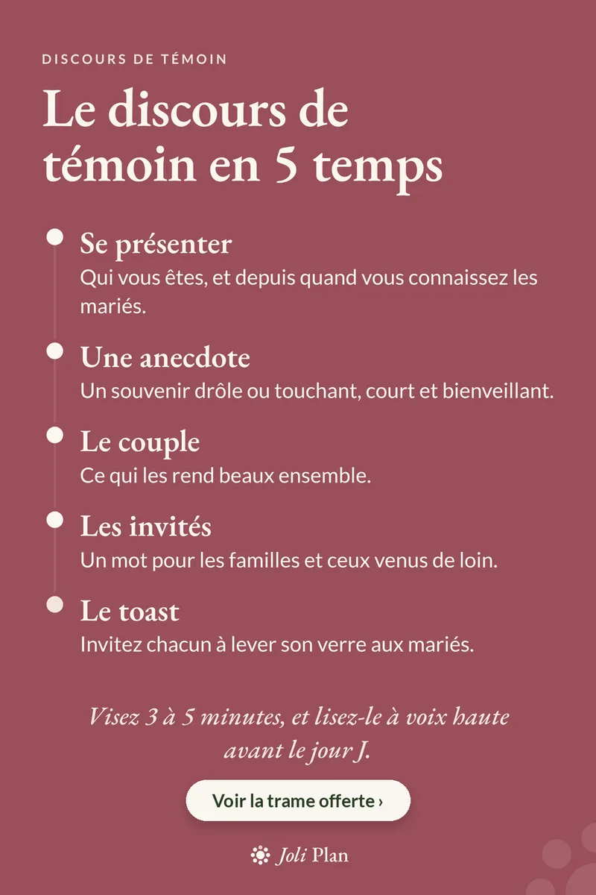

Témoins
Discours de témoin de mariage : la trame en 5 étapes
Mis à jour le 25/10/2026
Un bon discours de témoin tient en 3 à 5 minutes et suit une trame simple. Voici les cinq temps, dans l'ordre.
Voir l'organisateur de mariage sur Etsy ›

Les 5 temps du discours
- Se présenter Qui vous êtes, et depuis quand vous connaissez les mariés.
- Une anecdote Un souvenir drôle ou touchant, court et bienveillant.
- Le couple Ce qui les rend beaux ensemble.
- Les invités Un mot pour les familles et ceux venus de loin.
- Le toast Invitez chacun à lever son verre aux mariés.
Avant le jour J
- Lisez-le à voix haute et chronométrez-vous : visez 3 à 5 minutes.
- Gardez l'anecdote compréhensible par tous les invités, pas seulement par les amis proches.
- Prévoyez une version imprimée, même si vous la connaissez par cœur.
Questions fréquentes
Combien de temps doit durer un discours de témoin ?
Visez 3 à 5 minutes. Lisez-le à voix haute avant le jour J pour vérifier.
Que dire dans un discours de témoin ?
Présentez-vous, racontez une anecdote courte, parlez du couple, saluez les invités, puis proposez un toast.